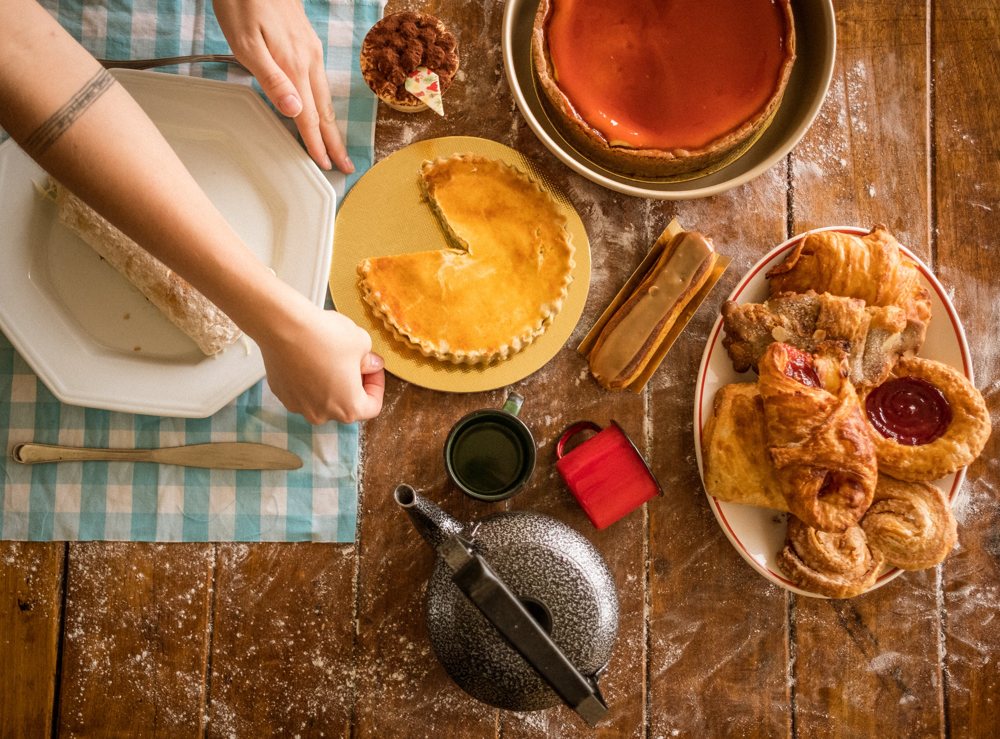

PotPie Recipe

Welcome to a world of savory indulgence with our Hearty Homestyle Pot Pies. Immerse yourself in the warm embrace of flaky, golden crusts that encase a medley of rich, mouthwatering fillings. From classic chicken and vegetable to decadent beef and mushroom, our pot pies are a celebration of homestyle comfort that transcends generations.
Ingredients
- chicken
- vegetables
- Butter and flour
- Broth
- Pie crust
Steps
- Make the Filling
Boil the cubed chicken with the carrots, peas, and celery for about 15 minutes. Drain and set aside. Cook the onions in butter until they're translucent, then stir in the flour and seasonings. Add the chicken broth and milk and simmer until the filling is thick.
- Fill and Bake the Pie
Place the chicken-vegetable mixture in an unbaked pie crust. Pour the chicken broth mixture over it. Cover with the top crust, seal the edges, and cut slits in the top to allow the steam to escape. Bake until the pastry is golden brown and the filling is bubbly.